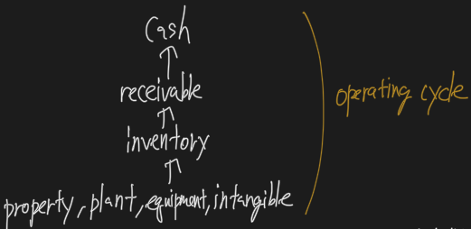

Financial Reporting and Analysis
Financial Reporting
- Financial reporting refers to the way companies who their financial performance to investors, creditors, and other interested parties by preparing and presenting financial statements.
- The role of financial statement analysis is to use the information in a company’s financial statements, along with other relevant information, to make economic decisions.
Balance Sheet
- The balance sheet (also known as the statement of financial position or statement of financial condition) reports the firm’s financial position at a point in time.
- A financial statement item should be recognized if a future economic benefit from the item is probable and the item’s value or cost can be measured reliably.
- Financial statement item은 아래 두 조건을 만족해야 함
- probable future economic benefit
- measured reliably
- The balance sheet can be used to assess a firm’s liquidity, solvency, and ability to make distributions to shareholders.
- From the firm’s perspective, liquidity is the ability to meet short-term obligations and solvency is the ability to meet long-term obligations.
- The balance sheet elements (assets, liabilities, and equity) should not be interpreted as market value or intrinsic value. For most firms, the balance sheet consists of a mixture of values.
- There are a number of assets and liabilities that do not appear on the balance sheet but certainly have value.
Classified balance sheet
- The current / noncurrent format is known as a classified balance sheet and is useful in evaluating liquidity.
Liquidity-based format
- Firms can choose to use a liquidity-baed format if the presentation is more relevant and reliable.
- Liquidity-based presentations, which are often used in the banking industry, present assets and liabilities in the order of liquidity.
Working Capital
- Current assets minus current liabilities equals working capital.
- Not enough working capital may indicate liquidity problems. Too much working capital may be an indication of inefficient use of assets.
Assets
- Resources controlled as a result of past transactions that are expected to provide future economic benefits.
Current Assets
- Current assets include cash and other assets that will likely be converted into cash or used up within one year or one operating cycle, whichever is greater.
- The operating cycle is the time it takes to produce or purchase inventory, sell the product, and collect the cash.
- Cash and cash equivalents
- Marketable securities
- Accounts receivable
- Inventories
- Other current assets
- Prepaid Expenses
Accounts Receivable
- If a sale of goods is made on credit, revenue can be recognized at the time of sale, and an asset, accounts receivable, is created on the balance sheet.
Noncurrent Assets
- Property, plant, and equivalent
- Historical cost
- Investment property
- Deferred tax assets
Deferred tax assets
- created when the amount of taxes payable exceeds the amount of income tax expense recognized in the income statement.
Liabilities
- Obligations as a result of past events that are expected to require an outflow of economic resources.
Current Liabilities
- Current liabilities are obligations that will be satisfied within one year or one operating cycle, whichever is greater.
- Accounts payable
- Current portion of long-term debt
- Accrued Liabilities
- Unearned Revenue
Unearned Revenue
- If payment for the good is received prior to the transfer of the goods, a liability, unearned revenue, is created when the cash is received.
Noncurrent Liabilities
- Long-term financial liabilities
- Deferred tax liabilities
Equity
- The owners’ residual interest in the assets after deducting the liabilities.
- Equity is also referred to as stockholders’ equity, shareholders’ equity, or owners’ equity.
- Analysts sometimes refer to equity as “net assets.”
- Owners’ equity is the residual interest in assets that remains after subtracting an entity’s liabilities.
- Contributed capital
- Preferred stock
- Retained earnings
- Treasury stock
- Accumulated other comprehensive income
Statement of comprehensive income
- The statement of comprehensive income reports all changes in equity except for shareholder transactions.
Income Statement
- The income statement (also known as the statement of operations or the profit and loss statement) reports on the financial performance of the firm over a period of time.
- The income statement is sometimes referred to as the statement of operations, the statement of earnings, or the profit and loss statement (P&L).
Revenues
- Revenues are the amounts reported form the sale of goods and services in the normal course of vbusiness.
- Revenue less adjustments for estimated returns and allowances is know as net revenue.
- The converged standards identify a five-step process for recognizing revenue.
- Identify the contract(s) with a customer.
- Identify the separate or distinct performance obligations in the contract.
- Determine the transaction price.
- Allocate the transaction price to the performance obligations in the contract.
- Recognize revenue when (or as ) the entity satisfies a performance obligation.
Gross Profit
- Gross profit is the amount that remains after the direct costs of producing a product or service are subtracted from revenue.
Expenses
- Expenses are the amounts incurred to generate revenue and include cost of goods sold, operating expenses, interest, and taxes.
- If the financial statements were prepared on a cash basis, neither revenue recognition nor expense recognition would be an issue.
- Under the accrual method of accounting, expense recognition is based on the matching principle whereby expenses to generate revenue are recognized in the same period as the revenue.
Gains and Losses
- The income statement also include gains and losses, which result in an increase (gains) or decreases (losses) of economic benefits.
Noncontrolling Interest
- the share (proportion) of the subsidiary’s income not owned by the parent is reported in parent’s income statement as the noncontrolling interest (also known as minority interest or minority owners’ interest).
Statement of Changes in Equity
- The statement of changes in equity reports the amounts and sources of changes in equity investors’ investment in the firm over a period of time.
Statement of cash flows
- The statement of cash flows reports the company’s cash receipts and payments.
Financial Statement의 기본 구성
- Balance Sheet (Statement of Financial Position, BS)
- Statement of Comprehensive Income
- Income Statement (Profit and Loss Statement, IS, P&L)
- Cashflow Statement (CF)
- Statement of Changes in Equity (SE)
Balance Sheet
- Stock concept
- 일정 시점의 수치
- Debit side의 Asset, Credit side의 Liability, Equity로 구성
- Debit side는 회사 자산의 구성, Credit side는 자산의 출처
- Consolidation - 연결재무제표
- non-controlling interest - 비지배지분 표시
Assets
- control + future economic benefit
- the ability to generate cashflow in the future
- Probable & Reliably Measurable
- 법적 Ownership이 없어도 control 할 수 있다면 assets으로 인식 가능
- 모든 자산이 인식되지 않을 수 있음 (ex. 인적 자원)
- Current Assets, Noncurrent Assets
Operating Cycle

BS와 IS의 흐름

Liabilities
- Current Liabilities
- Account Payable - 매입 채권
- Current Portion of Long-term Debt - 1년 내 상환기일 도래 장기채
- Accrued Liabilities - 미지급금
- Unearned Revenue - 선수금
- Noncurrent Liabilities
- Operating Liabilities, Non-operating Liabilities (= interest bearing debt)
- Liabilities의 구성은 운영 상 발생한 회계 부채와 실제 이자를 발생시키는 금융부채로 나뉨
Equity
- Net Assets
- 별도 정의 없이 Assets - Liabilities = Equity
- Contributed Capital - 자본금
- Capital Stock = Par value * number of issued shared = 액면가 * 발행 주식 수
- Additional Paid-in Capital - 주식발행초과금
- Retained Earnings - 이익잉여금
- Treasury Stock - 자사주
- Equity에서 항상 minus
Income Statement
- flow concept

- Sales Revenue - 매출
- Cost of Goods Sold = Cost of Sales (CGS) - 매출 원가
- Gross Profit - 매출총이익
- SG&A Expenses - 판관비
- Depreciation - 감가상각비
- Operating Profit (=EBIT: Earnings Before Interest and Tax) - 영업이익
- Creditor의 Interest, Government의 tax, stockhoder의 dividend의 합
- Interest Expense - 이자비용
- Tax Expense - 계속사업관련 tax
- Income from continuing operations - 계속사업손익
- Discontinued operations, net of tax - 중단사업관련 tax
- Net Income - 당기순이익
- BS의 Retained Earnings로 이동
수익, 비용 인식
- Cash Basis, Accrual Basis
- GAAP에서는 Accrual Basis만 인정
- Accrual Basis의 수익인식 five steps
- Identification of Contract
- Identification of Separate Performance Obligation
- Transaction Price
- Allocation of 3 into 2
- Satisfaction of Performance Obligation
- 수익비용 대응원칙 - matching principle
- 수익을 인식한 시점에 비용을 함께 인식해야 한다.


Return on Equity(ROE, Dupont Analysis)


- 재무에서의 valuation은 요구수익률과 기대수익률의 합의점을 찾는 것
- Residual Income Model (초과이익모형, RIM)에서의 핵심은 ROE와 요구수익률
- ROE는 주주가치에서 매우 중요
- ROE = Net Income / Average Equity = Net Profit Margin * Asset Turnover * Financial Leverage = EBIT Margin * Interest Burden Ratio * Tax Burden Ratio * Asset Turnover * Financial Leverage
Inventory Analysis
Basic Formula

- 기초 재고 + 당기 매입 재고 = Goods available for sale
- Goods available for sale = Cost of Goods for Sold (IS) + 기말 재고 (BS)
Acquisition Cost
- 매입 원가 = 매입 가액 + 매입 시 발생한 부대비용 + 가공시 발생한 비용 (직접비, 간접비)
- abnormal하게 발생한 비용은 바로 비용처리
- Ready for sale 시점을 기준으로 이전 비용은 전부 매입 원가에 편입, 이후 비용은 전부 비용처리
- Ready for sale 이후 비용 ex) storage, selling&admin expense, freight-out cost

Cost Allocation Process

- 가격 결정법에 3개
- FIFO (First In First Out, 선입선출법)
- 기말 재고가 상대적으로 과대평가되어 순이익이 커보이는 효과가 있음
- 세금을 더 내게됨
- profit 관점에서 선택하기 좋은 option
- LIFO (Last In First Out, 후입선출법)
- 기말 재고가 상대적으로 과소평가되어 순이익이 작아지는 효과가 있음
- 세금을 덜 내게됨
- cashflow 관점에서 선택하기 좋은 option
- Weighted Average
- FIFO (First In First Out, 선입선출법)
- 수량 결정법에 2개
- Perpetual System
- 매 거래마다 추적해서 CGS 계산해서 기말 재고 도출
- Periodic System
- 기말 재고를 기준으로 기초재고와 당기 매입 재고량을 고려하여 CGS 도출
- Perpetual System
- 결국은 CFA 시험에서는 회계 기준이 재무에 미치는 영향을 문제로 냄

- 매입할 때마다 가격과 양이 계속 오른다는 가정 하에
- CGS. cashflow는 FIFO < Avg < LIFO perpetual < LIFO periodic
- 기말 재고, net income, tax는 FIFO > Avg > LIFO perpetual > LIFO periodic
- 회계 기준에 따라 재무 비율의 차이를 물어봄
Inventory
Basic Equation

- Goods available for Sale = Begin Inventory + Purchase
- Goods available for Sale은 팔린건 CGS (IS)로, 남은건 Ending Inventory (BS)로
- CGS, Ending Inventory의 가격과 수량을 결정하는데 경우의 수 6개
- 가격 결정
- FIFO
- LIFO
- Average
- 수량결정
- Perpetual - 거래가 있을 때 마다 수량 계산 (CGS를 먼저 계산하고 이를 바탕으로 Ending Inventory 도출)
- Periodic - 기말에 남은 Ending Inventory에서 CGS를 역산
- 가격 결정
Acquisition Cost

- Ready for Sale 이전 시점까지 발생한 모든 비용을 Inventory에 합산
- Raw Material + Freight-in cost + Conversion Cost(Labor, Overhead) = Finished Goods
- Ready for Sale 이후 비용은 전부 Expense 처리
- Abnormal Cost도 전부 Expense 처리
Cost Allocation Process


- LIFO는 IFRS에서 not allowed
- LIFO는 구매량 조절로 Earnings를 manipulation 할 수 있음
- price & quantity가 오른다는 전제 하에 Tax를 이연시키고 싶으면 판매량보다 구매량을 늘리면 됨
- LIFO Liquidation - 구매량 < 판매량일 경우 발생
- 상대적으로 낮은 historical price로 인해 CGS가 급격하게 낮아져서 이연시켜뒀던 Tax가 한꺼번에 발생할 수 있음
- LIFO는 상대적으로 Ending Inventory는 old price, CGS는 new price여서 IS에서 matching principle에 더 부합함
- Price가 오르면 Earnings down, Tax down, Cashflow up 효과 발생


- LIFO → FIFO를 대부분 사용
- LIFO Ending Reserve, LIFO Beginning Reserve가 제시되고, 이를 활용해서 LIFO를 FIFO로 변경해야 함
- Tax Rate 유무에 따라 계산 복잡도가 달라지는데, Cash의 감소분 = Tax니까 제일 먼저 계산하면 편함
- LIFO Reserve는 Price & Quantity가 상승하면 갈수록 높아짐
Good available for Sale

- Inventory의 시가평가 이야기인데, Acquisition Cost와 Market Value 중 lower 값
- Lower of Cost or Market (LCM)

- IFRS에서는 Net Realizable Value (NRV) 사용
- 순실현가치를 기준으로 NRV가 Acquisition Cost 낮으면 Inventory를 revaluation
- recovery도 가능
- US GAAP에서는 Principle은 NRV
- LIFO기업은 기준이 다름
- Replacement Cost (=Current Cost)
- Ceiling = NRV
- Floor = NRV - Normal Profit
- Recovery is not allowed
- LIFO기업은 기준이 다름
- Inventory 평가손실은 CGS로 들어감
Change in Accounting Principle

- principle의 변화는 반드시 소급적용(retrospective) - Prior Financial Statement를 restate해야 함
Long-Lived Assets
- PPE (Plant, Property, Equipment), Intangible
- Asset의 agenda
- 최초 value 인식
- 기말마다 value 인식
- book-off시 처리 방법
PPE

- 최초 value 인식
- Asset의 조건
- Future economic benefit이 probable
- Asset의 조건
- 기말마다 value 인식
- Depreciation
- Revaluation & Impairment (손상차손)
- book-off시 처리 방법
- Derecognition
Acquisition

- PPE Acquisition Cost = Purchase Price + Reasonable Cost (until Ready for use)
- Installation and Testing Cost까지 포함

- PPE는 기본적으로 사이즈가 커서 차입이 있는 경우가 많음
- Beginning ~ Ending 시점까지 발생한 Interest는 PPE Acquisition Cost에 포함시켜서 Capitalized 됨
Depreciation
- 감가상각은 valuation 개념이 아니라 비용처리의 개념

- Systemic and rational cost allocation process over useful life based on matching principle

- Depreciation 계산을 위해 알아야 하는 수치
- Acquisition Cost (=historical cost)
- Salvage Value (=residual value) - 잔존가치
- Depreciation Base = Acquisition Cost - Salvage Value
- Useful Life - 내용연수
- Depreciation Method
- Depreciation Method의 변경은 Change in Accounting Estimate라서 Prospective로 처리 가능
Depreciation Method

- Units of Production Method
- 내용연수 기간동안 생산할 수 있는 총량 기준으로 business year동안 생산한 양만큼 감가상각
- 잘 안쓰는 방법
- Straight Line Method
- 99% 이 방법 사용함
- 정액법
- Accelerated Deprecation Method - Double-Declining Balance
- 정률법
- 다양한 방법이 있지만 DDB만 소개
- (Acquisition Cost - Accumulated Depreciation) * 2 / Useful Life
- 만약 salvage value > book value가 되면 deprecation stop
- Component Deprecation (부분상각법)
- US GAAP - Allowed but not usual
- IFRS - Required
- 항공기를 예시로 생각하면 동체, 엔진, 좌석 별로 내용연수를 따로 측정하여 감가상각을 부분별로 진행하는 것
Revaluation

- US GAAP - not allowed, cost model only
- IFRS - allowed, Cost model or revaluation model
- Class별로 model 선택 가능
- class내 개별자산 별로는 model 선택 불가
- Annual Revaluation이 강제되는 것은 아님
- 실무적으로 3 ~ 5년 단위로 revaluation
- Revaluation을 통해 gain이 있으면 IS안거치고 Other Comprehensive Income (BS)에 Revaluation Surplus로 올라감
- Revaluation을 통해 loss가 발생하면 그냥 IS에서 net income감소로 retained earnings에 바로 반영됨
Impairment (손상차손)
- valuation 개념
- 자신이 가지고 있는 PPE가 완전히 맛이 갔다고 판단하면 impairment

- 사용하려고 들고있던 자산의 경우
- US GAAP
- two step으로 valuation
- PPE Book Value > PPE total future cashflow (not PV)
- Loss = PPE Book Value - PPE Fair Value
- 해당 loss는 Non-operating loss로 IS에 반영
- Recovery not allowed
- revaluation되어도 depreciation
- IFRS
- one step
- Loss = PPE Book Value - Recoverable Amount
- Recoverable Amount = Max(Net selling price, Value in use)
- Net selling price = selling price - selling cost
- Value in use = Present Value of future cashflow
- Recoverable Amount = Max(Net selling price, Value in use)
- revaluation되어도 depreciation
- recovery is allowed up to cost (이전 매입가까지만 recovery 가능)
- US GAAP

- 팔려고 들고 있던 PPE의 경우 US GAAP = IFRS
- Impairment의 경우 impairment 전후로 implication이 다름
- impairment 전의 경우 useful life, salvage value의 가정에 실패했나 물어볼 수 있음
- impairment 후의 경우 big bath (재무제표 청소) 의혹을 생각할 수 있음
Plants, Properties and Equipments

- 모든 자산의 재무적 관점은 3 steps
- 인식
- 후속측정
- 제거
- PPE는 이런 관점에서 Acquisition → Depreciation & Impairment → Derecognition
- PPE의 후속측정에는 Revaluation과 Impairment 이슈가 있음
- Depreciation은 Valuation이 아니지만, Revaluation과 Impairment는 valuation 개념
- Revaluation
- IFRS only
- Impairment
- US GAAP, IFRS allowed
- held for use
- US GAAP - two steps, Depreciation, Recovery not allowed
- IFRS - one steps, Depreciation, Recovery allowed up to historical value
- held of sale (매각예정자산)
- US GAAP와 IFRS 거의 유사
- Lower value - NRV or PPE BV
- Depreciation x
- Recovery allowed
- NRV < BV의 경우 IS에서 Impairment Loss로 계상
Derecognition

- Derecognition case는 총 5개
- Disposition (처분)
- Casualty (고장)
- Condemnation (국가 환수)
- Abandonment (폐기)
- Exchange (교환)
- Derecognition이 발생하면 PPE의 BV가 BS에서 제거되고 Asset 내의 다른 계정과목을 대체되거나 영업외 이익(손실)로 처리됨
- Loss or Gain = FV - BV
- Income from Continuing Operation에 포함됨
Investment Property
- 투자부동산
- 예시) 소유건물 30층 중 10층을 임대주면 IFRS에서는 사용 중인 20층은 PPE, 10층은 Investment Property, US GAAP에서는 해당 건물 자체를 그냥 PPE로 처리
- 보통 rental 목적
- US GAAP에서는 Rental 목적은 PPE, capital gain 목적은 Investment Property로 분류
- Valuation Model - Cost Model, Fair Value Model
- PPE와 다르게 Asset Class 별로 model 선택 불가, 해당 계정과목 전체를 통일된 하나의 모델로 valuation 해야 함
- Cost Model
- Fair Value Disclosure 필요
- Fair Value Model (공정가치모형)
- Gain → NI up → Retained Earnings up
- Loss → NI down → RE down
- Depreciation 하지 않음
Intangible Asset

- Definition of Intangible Asset
- Lack of physical substance
- Log term
- for use
- Normal Operation
- ex) patent, copyright, IP
Acquisition
- Externally purchase - Capitalize
- Internally development
- principle - expense
- exception
- US GAAP
- Research - Expense
- Development - Expense
- IFRS
- Research - Expense
- Development - Principle: Expense but 일정 요건을 만족하면 capitalize
- Software under US GAAP
- development for use, development for sale 상관 없이 after technological feasibility가 만족되면 capitalize
Amortization & Impairment

- Intangible Asset with definite life - Amortize
- Intangible Asset with infinite life - not amortize
- Goodwill, Brand
- 두 경우 전부 Impairment는 발생
Types of Intangible Asset


Tax Expense
- 회계상 손익과 tax base상 손익이 달라서 실제 납부하는 tax (current tax expense)와 회계적으로 계산된 EBIT에 세율을 곱해서 도출한 Tax가 다를 수 있음
- 조건에 따라 Deferred Tax Asset / Liability가 되면서 시점차이가 생길 수도 있고, 영구적인 Tax 차이가 생길 수도 있음
- Tax Return Terminology
- Taxable income - 세율을 곱하는 과세표준 이익
- Taxes payable - 납부예정 법인세
- Tax loss carryforward - 현재나 과거에 발생한 당기순손실을 법인세 buffer로 사용할 수 있는 항목을 의미, Deferred Tax Expense를 발생시키기도 함
- Tax base - net amount of an asset or liability used for tax reporting purpose
- Financial Reporting Terminology
- Accounting profit - 회계상 이익
- Income tax expense = Taxable Income +- Tax Reconciliation
- Deferred Tax Liabilities - 미래에 낼 수도 있는 이연 법인세
- Deferred Tax Assets - 미래에 덜 낼 수 있는 (돌려 받을 수 있는) 이연 법인세
- Valuation Allowance - 미래에 돌려 받을 가능성이 낮아 Deferred Tax Assets에 대손처리한 금액
- Permanent difference - not reverse in the future
- Temporary difference - reverse in the future
- 실제 납부하는 tax 계산
- Taxable Income = Pretax Financial Income +- Tax Reconciliation(T/Difference or P/Difference)
- Current Tax Expense(=Income Tax Expense) = Taxable Income * Statutory Tax Rate
- Deferred Tax Expense = Ending DTA(DTL) - Beginning DTA(DTL)
Tax Reconciliation

- Temporary difference (=Timing difference)
- 관점은 같지만 시점이 달라서 최종적으로 내는 총 세금은 같지만 일시적으로 생기는 세금 차이
- Permanent difference
- 올해 세금에 적용되고 끝나는 difference
- 관점 자체가 달라서 발생하는 영구적인 세금 차이
Temporary Difference
Cash Received in advance
- 회계상으로는 당기에 발생한 이익이 아니지만 tax base에서는 과세가능 소득이 발생한 것이라 선 과세됨

./Untitled%2036.png Depreciation
- tax base상 depreciation model과 달라서 생기는 Diferred tax asset/liability가 있음
- 보통 tax base에서는 accelerated depreciation model을 사용함

./Untitled%2037.png Warranty
- 판매시 warranty 비용을 먼저 선 처리하지만, Tax base에서는 warranty 발동 시 과세

./Untitled%2038.png Bad Debt Expense
- 대손충당금은 미리 회계적으로 비용을 처리하지만, tax base는 해당 account가 진짜로 파산했을 때 (대손상각이 필요한 시점)에 과세

./Untitled%2039.png Securities
- 유가증권 평가이익/손실로 인한 income/expense 발생은 tax base에서는 반영하지 않음
- 실현 손익을 기준으로 과세

./Untitled%2040.png Pension
- 퇴직급여부채는 매 회계기간마다 산정하지만, 실제 퇴사자가 발생했을 때만 Tax base에 잡힘

./Untitled%2041.png R&D
- R&D의 비용처리는 Tax base에서 별도의 기준을 가지고 있을 수 있음

./Untitled%2042.png
- Examples


Tax 계산

./Untitled%2045.png - Current Tax Expense (=Income payable), Deferred Tax Expense 두 개를 계산하는 것이 핵심
- CTE = Taxable Income * Current Statutory Tax Rate
- Taxable Income = Pretax Financial Income +- Tax Reconciliation
- Deferred Tax Expense = Ending DTA - Beginning DTA or Ending DTL - Beginning DTL
- IS 상 Tax Expense는 음수이므로 CTE도 음수
- 여기에 Deferred Tax Expense를 더해주면 됨(부호 무관하게)
- DTA, DTL은 Future Tax Rate을 사용해서 추산하게 되어있는데, 기말마다 하면 됨
- 대부분의 문제에서 Pretax Financial Income에 Tax Rate을 곱하면 위의 복잡한 과정을 거치지 않고도 바로 세금을 산출할 수 있는데 아래 같은 조건을 만족해야 함
- Permanent Difference가 없을 것
- No change in Tax rate
Permanent Difference

./Untitled%2046.png - Effective Tax Rate ≠ Statutory Tax Rate
Change in Tax Rate


- Decrease in Tax Rate
- DTA < DTL
- Increase in Tax Rate
- DTA > DTL
Analytical Purpose

- DTA
- Asset: BV < Tax base
- Liability: BV > Tax base
- 더 냈으니 다음에 돌려 받을 게 있는 개념
- 돌려 받을 세금이거나 앞으로 안내도 되는 세금의 개념
- DTL
- Asset: BV > Tax base
- Liability: BV < Tax base
- 덜 냈으니 다음에 더 내야 하는 게 있는 개념
- Permanent Difference인데 DTL이 발생한다면 liability 처리하지 않고 바로 equity 상에 반영
- DTA는 carry forward가 발생할 수 있음
- Realiable한지 보고, 실현가능성이 낮다면 Valuation Allowance로 금액을 잡고 이는 IS를 통해 Retained Earnings에 반영됨
- 참고로 DTA, DTL은 전부 noncurrent asset or liability로 분류, offset처리한다.
- 연결재무제표에서는 상계처리 되지 않았을 수 있음
- 대표적인 사유로 과세국가간 세율의 차이가 있음
- Present Value로 고치지 않음
- 현재의 100억과 미래의 100억은 다르지만, DTA, DTL은 nominal value를 사용해서 표시 함
- 이는 US GAAP, IFRS간 차이가 없음
- 연결재무제표에서는 상계처리 되지 않았을 수 있음
Effective Tax Rate ≠ Statutory Tax Rate

- Permanent Difference
- Change in Tax Rate
- Tax rate different according to jurisdiction
- Disclosure 해야 함
Non-current Liability
- Bond
- Lease - Level 1 개정에서 거의 빠진 것으로 보임
- Pension - Level 2
Bond

- Market Rate가 올라가면 Bond price는 내려감 and vice versa
Bond

- Face - 액면가
- Maturity - 만기
- Coupon Rate - 액면 이자율
US GAAP
- 발행시 CFF 입금
- 이자비용은 CFO
- 원금 상환은 CFF
IFRS
- 발행시 CFF 입금
- 이자비용은 CFO나 CFF
- 원금 상환은 CFF
Discount

- Coupon Rate 10% 채권을 Market Rate 11%인데 발행하면 Discount 발행
- Bond 계정과목 밑에 Discount로 마이너스 표시
- 매년 Amortize by effective interest rate method
- Discount 발행은 매년 이자비용이 증가

- 도식화하면 위 그림처럼 됨
- 발행하고 이후 Market Rate가 바뀌더라도, 이자 지급시 Coupon Rate와 비교하는 Market Rate는 발행 당시 Rate를 사용해야 함

- 매 이자 지급시기마다 발생하는 이자 비용은 Beginning Bond BV * MR at Issued * Month / 12
- Total Interest Expense = 원금 + 이자 - 발행 시 받은 돈
- Total Cash Interest + Discount

- US GAAP에서는 Discount or Premium 발행 후 발생하는 이자비용을 IS에서 Straight Line Method로 처리 가능함
- 정액으로 나눠서 배분 할 수 있음
- IFRS는 Amortize by effective interest rate method가 강제됨
Premium


- 기억해야 할 기본적인 사항은 Discount 발행과 같음
- 다만 IS상 이자비용은 Discount 발행과 반대로 갈 수록 이자부담이 줄어드는 구조
- BS에서 Premium은 더하기 항목으로 기록되고, Premium 감소분은 커지는 구조
Zero Coupon Bond

Bond Issue Cose

- 계산된 PV에서 BIC를 그냥 차감해서 BS에 기록하면 됨
- 들어온 Cash는 대변에 차감된 채로 기록되니, Bond는 액면가를 기록하고, BIC와 Discount를 그대로 차감항목으로 기록하면 대차 균형이 맞음
Callable Bond

- Callable Bond는 채무자가 상환할 권리를 가지는 채권
- Market Rate가 발행 당시 Rate보다 높으면 발행자는 즉시 상환하면서 해당 차액을 Non-operating Gain으로 챙길 수 있음
- 채권을 11%에 팔았는데 12%에 되살 수 있다면, 1%만큼 이익을 본 것
- Call option에는 종류가 많은데, call exercise가 이미 정해진 케이스가 있고, FMV로 정해지는 경우가 있음
Debt Convenats
- 약정

- Affirmative는 ~을 하라는 내용의 covenant
- Negative는 ~은 하지 마라라는 내용의 covenant
- 사례를 늘어놓고 성격이 다른 covemant를 고르라는 문제가 나옴
- Debt covenant는 disclosure해야 함
- Debt covenant 때문에 Technical Default가 발생할 수 있음
- Acceleration Close - 기한 이익 상실조항, 중도상환요구 가능 조항
- 채무자에게도 Debt Covenant가 도움이 될 수도 있음
- Valuation시 Covenant를 고려해서 할 수 있음
- 이는 WAAC를 낮추는 효과를 가져올 수도 있음
- Valuation시 Covenant를 고려해서 할 수 있음
Lease

- Lessor, Lessee, Manufacturer가 있음
- Lessor와 Lessee간 리스 계약 체결
- Lessor는 Manufacturer에게 대금을 지불하고 legal ownership을 받음
- Manufacturer가 Lessee에게 리스 대상 자산 인도
- Lessee는 Lessor에게 리스료 지급
- 모든 Economic benefit의 통제권이 Lessee에게 있어 리스 자산은 Lessee의 자산으로 잡힘
- Financial Lease - ex) 내용연수 10년 자산을 10년 간 리스
- Capital Lease라고도 부름
- 사실상 Lessor에게 돈을 빌려서 자산을 구매한 개념으로 봐도 무방함
- Operating Lease - ex) 내용연수 10년 자산을 2년 간 리스
- 3rd party lessor가 있는 것과 생산자의 직접 lease로 나뉘는데
- 3rd party lessor가 있는 경우를 direct lease
- 생산자 직접 lease를 sales-type lease
- 기존에 리스부채가 상계되지 않는 문제가 있었음
- 이로 인해 Off BS Financing 문제가 발생함 (부외금융 효과)
- Operating Lease는 이제 Financial Lease의 회계처리를 따라감
- 3rd party lessor가 있는 것과 생산자의 직접 lease로 나뉘는데

- Direct Financing Lease

- Sales-type Lease

Pension

- DB, DC형으로 나뉨
- DC형 - Employer’s contribution이 fixed, 운용 책임은 employee들에게 있음
- DB형 - Employee’s benefit이 fixed, 운용 책임이 Employer에게 있음
- Pension Obligation은 부채로 잡고, Plan Asset 항목을 착마하는 형태로 장부에 기록

- DC형은 아예 회사 외부에 자산이 존재하고, Employer에게 control, benefit이 하나도 없어서 장부에 잡지 않음

- DB형은 운용책임이 회사에게 있어 부채로 처리되는데, 조금 복잡한 편
- Projected Benefit Obligation - 사내 적립 퇴직금
- Plan Asset을 차감계정 형태로 기록
- Net Pension Liability = Projected Benefit Obligation - Plan Asset
- Plan Asset - PBO = Funded Status
- PA > PBO = Net Pension Asset
- PA < PBO = Net Pension Liability
Debt vs. Equity

- 간단하게 상환 의무를 회피할 수 없으면 Debt, 있으면 Equity
- 상환우선주의 경우 Callable은 Equity, Putable은 Debt
Security

- 소유 증권에 대한 구분에 따라 Valuation Method가 달라짐
- Trading Security
- Market Value
- Unrealized Gain or Loss → IS(Net Income)
- Interest, Realized Gain or Loss → IS
- Available for sale Security - 미분류 증권
- Market Value
- Unrealized Gain or Loss → BS OCI(AOCI)
- Dividend, Realized Gain or Loss → IS
- Held to maturity Security
- Amortized Cost
- 만약 주식일 경우 Held to maturity security로는 분류가 불가능, trading security, available for sale security에서는 위와 같이 valuation

- 파생상품은 시가평가
- Speculation 목적일 경우 Unrealized Gain or Loss → IS(NI)
- Hedge 목적일 경우 Unrealized Gain or Loss → BS OCI(AOCI)
- Unlisted Equity Security
- US GAAP - Cost
- IFRS - Market Value
SPPI Test

- Cashflow characteristic test라고도 하는데
- 원금과 이자로만 구성되어 있는지 알아보는 테스트
- 증권 분류 전에 돌려보는 테스트라고 함
- SPPI Test에서 해당되는 증권일 경우
- Business Model Test를 통해 아래 3개로 분류
- Holding - Amortized Cost Security
- Trading - FVTPL security (Fair Value through P/L)
- others - FVOCI security (Fair value through OCI)
- Business Model Test를 통해 아래 3개로 분류
- 해당되지 않는 경우
- 원칙은 PVTPL
- 단, FVOCI도 선택 가능
Allowance for Doubtful Account
- 대손충당금
- Contra Account - 마이너스로 표시되는 계정과목

- Contra Account
- PPE의 Accumulated Depreciation
- not valuation, for depreciation or amortization
- Bond의 Discount
- not valuation, for depreciation or amortization
- Deferred Tax Asset의 Valuation Allowance
- valuation 목적, NRV
- Account Receivable의 Allowance
- valuation 목적, NRV
- PPE의 Accumulated Depreciation
- 대손충당금을 예상되는 손실을 미리 잡아놓는 개념
Equity

- Capital Stock
- Preferred Stock
- Common Stock = Par Value * numbers of Issued shares
- Additional Paid-in Capital
- Retained Earnings = Beginning RE + Net Income - Dividend declared
- Accumulated Other Comprehensive Income
- (Treasury Stock)
- Non-controlling Interest (= Minority Interest)
- Redeemable Preferred Stock - Liability
- 주주가 상환을 요구할 수 있는 우선주
- Callable Preferred Stock - Equity
- 회사가 상환권을 가지고 있는 우선주
Authorized Shares

- 총 발행 가능 주식 수라는게 있음
- 그 중에 발행된 주식을 Issued shares
- Issued된 주식 중 outstanding과 treasury로 나눌 수 있음
- treasury stock은 매입한 자사주
- outstanding stock은 자사주 외 모든 발행된 주식
Treasury Stock

- 자사주는 아무런 권리도 없음
- 자사주 매입 목적
- 주가부양목적
- 적대적 M&A Protection
- 대주주 지분강화
- Employee Benefit
- etc
AOCI

- OCI는 당기순이익 밑에 적히고, Comprehensive Income이라는 걸 만들어 냄
- CI는 올해 주주 부의 증가량을 의미
- 주주간 거래는 계산에서 제외됨
- 증자, 감자, 배당, 자사주 거래 등
- 주주간 거래는 계산에서 제외됨
- under IFRS, PPE의 Valuation 모델 수정으로 발생한 Gain은 OCI
- FS에는 Comprehensive Income Statement(포괄손익계산서)도 포함되는데
- Other Comprehensive Income에는 아래와 같은 것들이 있음
- Foreign currency translation Gain or Loss
- Pension 관련 Gain or Loss
- Unrealized Gain or Loss from Cashflow hedging derivatives
- Unrealized Gain or Loss from AFS Security (under IFRS, FVOCI)

- 주주간 자본거래에서 발생한 Income이니까 증자는 빼주고, 배당은 더해주고, 자사주 매입은 더 해주면 됨

- AOCI는 손익이 실현되지 않았지만 인식되었고, 당장 배당자원으로 활용이 불가능한 재원을 의미함
Statement of Change in Equity

- 자본변동표
- CS, APIC는 증자와 감자가 없으면 별 다른 이벤트가 없음
- RE, AOIC가 Comprehensive Income의 영향을 가장 많이 받음
Income Statement

- Revenue, Expense - 주된 영업활동에서 발생한 매출과 비용
- Gain, Loss - Incidental events에서 발생한 이익과 손실
Non-controlling Interest

- 연결손익계산서에서 비지배 부분만큼 빼주는 부분
Revenue Expense Recognition

- 5 steps
- Identification of Contract
- Performance Obligation
- Transaction Price
- Allowance
- Satisfaction of Performance Obligation
- 선입금, 후매출 → Unearned Revenue (Liability)
- 선매출, 후입금 → Accrued Revenue (Asset)
Bad Debt Expense

- 대손충당금 손실
- Account Receivable에서 차감계정(Allowance)으로 표시
- 대손충당금을 잡았을 때 IS에 Bad Debt Expense로 손실로 잡을 것
- 실제로 못 받게 됐을 때 (Actual Write-off)
- IS에 No Expense
- Tax base에서는 Bad Debt Expense를 인정하지 않음
- 실제로 Default 되면 인정
- 대손충당금으로 인해 세금을 더 내게 되면 DTA로 잡힘
Warranty Expense

- 판매와 동시에 미리 비용으로 처리 됨
- 그리고 BS에 Warranty Liability로 계상
- Tax는 실제 Warranty가 발동되면 비용 인정
Non-recurring Item
Discontinued operations

- Income from continuing operations 밑에 discontinued operations로 입력
- net of tax 금액으로 입력
- 만약 회계년도를 넘어가서 사업이 중단된다면 예상 loss를 전부 당 회계년도에 땡겨와서 IS에 반영
Unusual Infrequent Items

- ex) Impairment, Disposition of PPE
- Income from continuing operation으로, 세전 금액임
Changes in Accounting Policy

- Retrospective
- ex) LIFO → FIFO
Changes in Accounting Estimate
- Prospective
- ex) Salvage Value, Useful Life, Depreciation Method
Prior Period Adjustment

- 전기오류수정으로 인해 발생하는 손익
- 보통 회계규정 변경으로 인해 Non Acceptable Policy → Acceptable Policy로 바꾸면서 retrospective 변화가 일어나서 발생
EPS
- EPS는 100% 계산 문제
Basic EPS

- 보통주 관점에서의 EPS
- BEPS = Net Income - Dividend on Preferred Stock / 주식수
- BEPS는 flow concept인데, 주식수는 Stack concept이라 조정이 필요함
- Common Stock을 대상으로
- Weighted Average 회계기간 동안 평균 주식수
- Treasury Stock 차감
- 이렇게 계산하면 outstanding common shares가 나옴


Weighted Average

- 아래 예시의 마지막 식처럼 계산하는게 제일 속 편함
- 1월에 10000주, 3월에 4000주 증가, 7월에 1400주 증가, 9월에 3000주 감소
- 1월에 12개월 곱해주고, 3월에 9개월(12개월 중 3개월은 10000주인 상태로 있었으니까) 이렇게 가중평균
- 1월에 10000주, 3월에 4000주 증가, 7월에 1400주 증가, 9월에 3000주 감소
Diluted EPS


- Capital Structure에는 convertible bond, convertible P/S, Stock option or warrent 등 여러 stock 물량에 영향을 미칠 수 있는 증권들이 있음
- Convertible Bond, Convertible P/S → If-converted Method (전환가정법)
- Stock Option or Warrant → Treasury Stock Method (자기주식법)
- Simple capital structure (단순한 자본 구조를 가진 회사의 경우) BEPS only
- Complex capital structure의 경우 BEPS + Diluted EPS를 함께 사용
If-converted Method
- BEPS 계산
- If-converted 되었다고 가정하고 incremental effect 계산
- CB의 경우 이자로 세금을 덜 내고 있었으니 세금효과 보정이 필요함
- 전환하게 되면 이자부담 감소로 Earning이 증가하고, 세금이 발생함
- DEPS 계산
- BEPS > Incremental Effect인 경우에만 Dilute EPS를 계산 - dilute
- BEPS < Incremental Effect인 경우 DEPS 계산하지 않음 - Anti-dilutive
CPS (Preferred Share → Common Share)

- Convertible Preferred Stock도 위와 마찬가지로 If-converted Method로 계산
- Preferred Stock은 Dividend를 주므로 세금에 영향을 받지 않음
- 마찬가지로 BEPS > Incremental Effect인 경우에만 DEPS 계산
Stock Option or Stock Warranty

- If-exercised Method (Treasury Stock Method)로 계산
- in-the-money 상태에서 옵션이나 워런트가 실행되었다고 가정하고 계산하는데, 분자인 이익에는 옵션이나 워런트 실행으로 들어오는 cash flow를 반영하지 않음
- 아래 예시처럼 풀 것
Cash Flow Statement

- CFO, CFI, CFF는 Earnings Quality를 결정한다.
How to classify CFO, CFI, CFF


- under US GAAP
- For Issuer
- Bond - CFF
- Stock - CFF
- Interest - (CFO)
- Dividend - (CFF)
- For Investor
- Bond - (CFI)
- Stock - (CFI)
- Interest - CFO
- Dividend - CFO
- For Issuer
- under IFRS
- For Issuer
- Bond - CFF
- Stock - CFF
- Interest - (CFF)
- Dividend - (CFO)
- For Investor
- Bond - (CFI)
- Exception
- Trading Security - (CFO)
- Treasury Stock - (CFF)
- Exception
- Stock - (CFI)
- Exception
- Trading Security - (CFO)
- Treasury Stock - (CFF)
- Exception
- Interest - CFI
- Dividend - CFI
- Bond - (CFI)
- For Issuer
How to prepare Cash Flow


- CFI, CFF를 하나하나 다 발라서 direct method로 계산하고, CFO를 direct method로 계산할지, indirect method로 계산할지 결정

Non-Cash Transaction (비현금거래)

Business Cycle

Common Size

- Common size BS - Asset 기준
- Common size IS - Revenue 기준
- Common size CF - Revenue 기준
Free Cash Flow to the the Firm (FCFF)

- NI + NCC - WC + Interest Expense(1-Tax Rate) - FCI = FCFF

Cash Flow ratio

Financial Reporting

- IS
- BS
- CF
- SE
- footnote
- 기억해야 할 문서
- Form S-1 - 유가증권신고서 or 증권발행신고서
- Form 10-K - Annual Report (사업보고서)
- Form 10-Q - Quarterly Report (분기보고서)
- Form 8-K - Corporate Governance (ex. M&A)
Standard Setting Body, Regulatory Authorities


- U.S.
- Standard Setting Body - FASB
- Regulatory Authorities - SEC
- Europe, IFRS
- Standard Setting Body - IASB
- Regulatory Authorities - FCA
- International Regulatory Authorities - IOSCO
Useful Information


Financial Reporting Quality